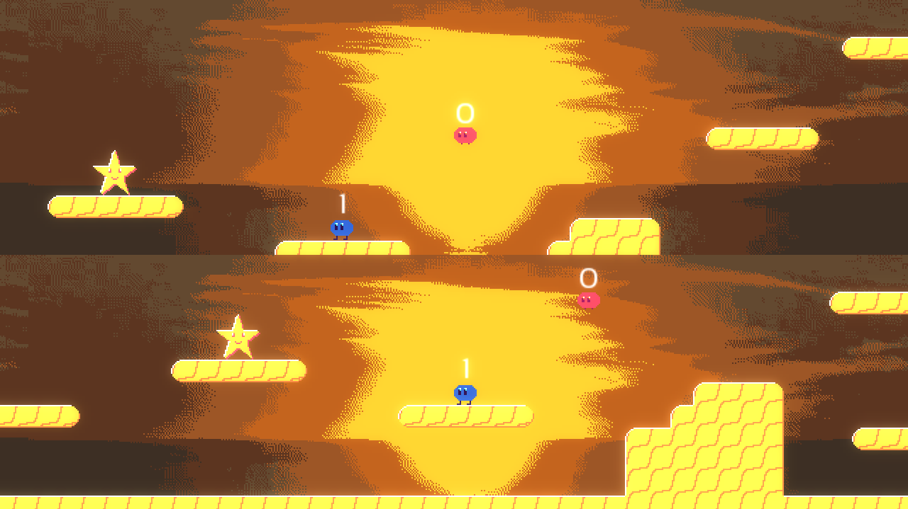
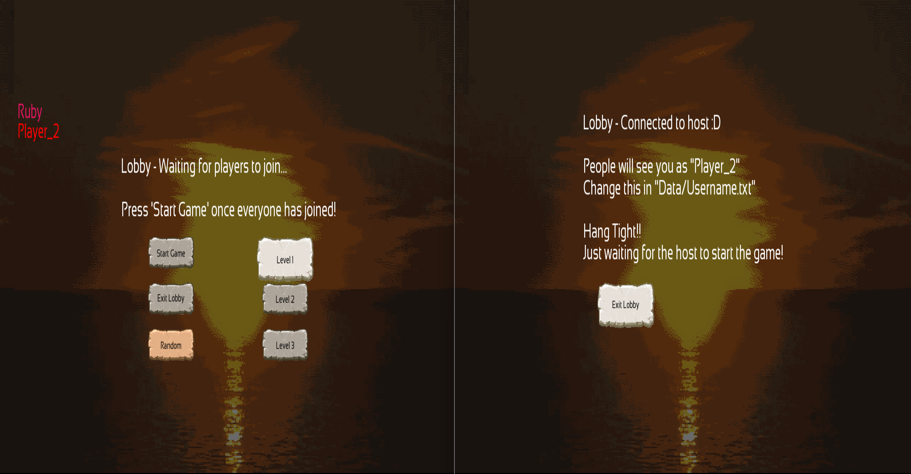
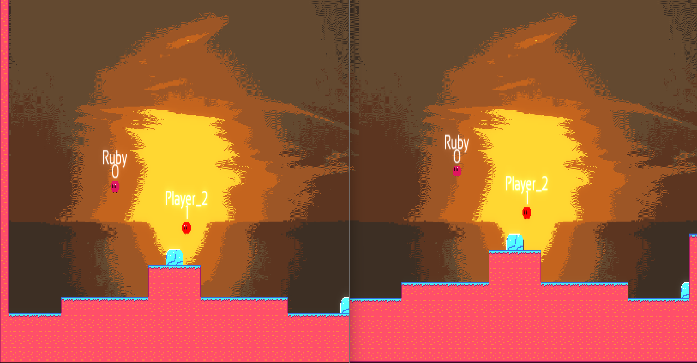
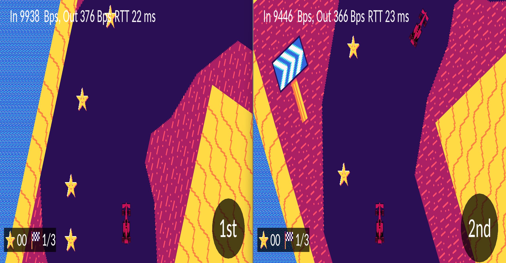

Really Fast Rat is a solo indie game I have been working on in my spare time between work and college assignments. It is a highspeed 2D platformer, where players aim to beat levels as fast as possible to get the best time!
It can be found on steam in early access, along side a fully filled out steam page.
I developed it by myself using a custom game engine built using the pygame framework. I also worked on all the marketing material, such as trailers. The focus of the game is to make a game centred around speed. This comes from players beating the levels fast to beat their best times, but also allowing casual players to go fast. Several sections of the levels allow all players of all skill levels get a sense of the speed.
Ship Drift
By 3Bee
Ship Drift was my big final year project made for my college course. It was made with me and a team of 4 others. It is a rougelike game, where the player plays as "Skipper", who is working to save his fishing waters from a polluting international company.
For this project, I was the Team Lead, as well as the main Game Programmer and Game Designer. The game was concepted and developed over the course of 2 semesters.
Below you can find a mahara page documenting my contributions, or the team page with an full overview of the game.
The game's repository can be found below.
The game was made using Unreal Engine 5.6.1 using the built in blueprints system. The game is endless, so the player is going for a best score. This is score is based on how many days they complete (as in game, each day is Skipper coming back to stop the company again). The in game level is randomised each run, as well as made more difficult. However, the player get buy upgrades for their ship to make their task easier!
I also made the trailer that can be seen below.
ITCH.IO
By Me
My itch.io page contains most of the games I have ever made, or helped out on!
I have participated in several game jams, where developers make games in a short period of time with a specific theme, my best result being a game called Make A Game For Me.
This was a submission to the GMTK Game Jam 2023, where the theme was "Roles Reversed", so naturally, I made a game where the player had to make a game. It came 304th place overall (out of 6686 entries), and came 16th in the creativity category.
I have several other games and demos on my itch, so feel free to check it out!
Revolvium
By Really Ambitious Team (RAT)
Revolvium was a team project made for my 3rd year Universal Design Project. It was made in a team with 3 other people. It is a puzzle game where the player much reach the end of the level by rotating pieces of it, like a puzzle cube.
For this project, I was also the team lead, as well as the lead programmer and game designer.
The game was made over the course of a single semester, and was made using the Unity Game Engine. The design goal for the game was to make something that could be played by everyone. The game has no timed inputs, no fail states, and no enemies or obstacles. The only thing between the player and the end is their own puzzle solving abilities.
Below you can see a demo that plays through the whole game!
Past Work
Rising Stars
By Starilum Games Team
In 2025 I did a work placement with Starilum to develop a 3D game using Unity and C#. The game was designed to promote different music we had been given, and the basic concept was to make a game where the player could experience a story with the music, like an interactive music video.
I worked as a Game Programmer, UI Designer, and Game Director. The project lasted for around 6 months, and the final build of the game can be found using the link below! (Do note that I do not own the website this is hosted on, so apologies if the link goes dead one day)
Other College Projects
Multiplayer Distributed Programming
By Me and one other
In fourth year, in a pair project, I made 3 multiplayer games. One of the games was a local splitscreen game, while the other 2 were networked, using TCP for the first, and UDP for the second.

Two players playing splitscreen in our game.
The aim of the first two games, was to be the first player to collect 10 stars. You could take other's stars by bumping into them or jumping on their head. Both of these were made using C++ in the same custom SFML engine.

Two players waiting in the lobby. The host client is on the left.

Two players playing on two clients.
The networked version used TCP, as that was what was required in the brief. The game could support up to 4 players playing at once.

Two players playing our top down racing game.
The third and final game was one made using UDP in a new C++ game engine that also used SFML. In game, the players must complete 3 laps the fastest, picking up stars to help their car go faster.
Below, you can find the repositories for each game!
Phonelox
By Me
Phonelox is a game where the player gets trapped inside a phone box, and must use the phone inside to solve puzzles to escape.
This was a solo project made in Unreal Engine 5.
You can watch the screencast video I made to showcase the game and it's puzzles below.
The game was made in a short period of time, and contains 3 puzzles. It makes use of a good amount of Unreal features, like sound cues, substrate materials, niagra effects, widgets, blueprints, and lighting.